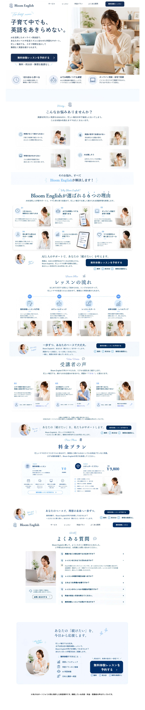

LP Design Work
Bloom English LP Design
AI英会話サービス / ランディングページデザイン
AI英会話サービス「Bloom English」の無料体験申し込みを目的に制作したLPデザインです。ChatGPTやFlow（Nano Banana Pro）で生成したビジュアルを活用し、Canvaでレイアウトやデザインを調整しながら、一つのLPとして仕上げました。
制作内容
AI生成ビジュアルを活用し、
CanvaでLPデザインを制作
- 無料体験申し込みにつなげる目的に合わせて、LP全体の構成を整理
- ChatGPTを活用し、掲載内容やコピーの方向性を検討
- ChatGPTやFlow（Nano Banana Pro）で生成したビジュアルを活用
- Canvaでレイアウトやデザインを調整し、一つのLPとして仕上げ
使用ツール
ChatGPTやFlow（Nano Banana Pro）で生成したビジュアルを活用し、
Canvaでレイアウトやデザインを調整しました。
- ChatGPT
- Flow
- Canva
完成イメージ
Bloom English LP 全体デザイン

制作ポイント
デザインで意識した3つのポイント
01
安心感のある配色
ベージュとホワイトを基調に、初心者の方でも構えずに始められるやわらかい印象を意識しました。
02
余白を活かした視認性
情報を詰め込みすぎず、余白を十分に確保することで、内容が自然に読み進められる構成にしました。
03
迷わないCTA導線
Hero・料金プラン・CTAの各所に申し込み導線を配置し、無料体験への行動につながる流れを設計しました。
セクション別デザイン
Hero〜CTAまで、セクションごとのデザイン
画像はクリックで拡大表示できます。